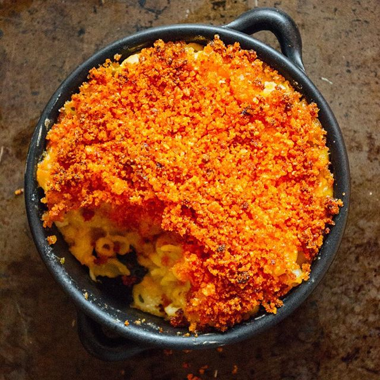

Kimchi Mac and Cheese

Description
This dish combines two of the better known comfort foods into one melody.
That would be, both kimchi and mac and cheese.
Kimchi is a fermented cabbage, with a bit of a kick from red pepper paste.
Combining the acidic, spicy flavors of kimchi with creamy, melt in your
mouth mac and cheese is a match made in heaven.
Ingredients
- 1 (16 ounce) package elbow macaroni
- 6 tablespoons butter, divided
- 1.5 cups panko bread crumbs
- 6 cups chopped kimchi, squeezed dry
- 5.5 cubes whole wilk
- 1.5 cup all-purpose flour
- 1 pound grated Cheddar cheese
- 1.5 pound shredded Monterey Jack cheese
- salt and ground pepper to taste
Steps
- Bring a large pot of lightly salted water to a boil. Cook elbow macaroni in the boiling water, stirring occasionally, until tender yet firm to the bite, about 8 minutes. Rinse macaroni with cold water and set aside.
- Preheat the oven to 400 degrees F (200 degrees C). Grease one 4-quart casserole dish with 1 tablespoon butter.
- Melt 3 tablespoons butter in microwave and mix with bread crumbs.
- Heat milk in a saucepan over medium heat until warmed through.
- Melt 2 tablespoons butter in a large, high-sided pan over medium heat. Add flour once bubbling; whisk for 1 minute. Slowly pour in the warm milk. Whisk until sauce thickens slightly.
- Remove sauce from heat and stir in Cheddar and Monterey Jack cheeses. Add the macaroni; stir to coat. Mix in the drained kimchi. Season with salt and pepper. Pour into the prepared casserole dish. Sprinkle the buttered bread crumbs on top.
- Bake in the preheated oven until browned on top, about 20 minutes.